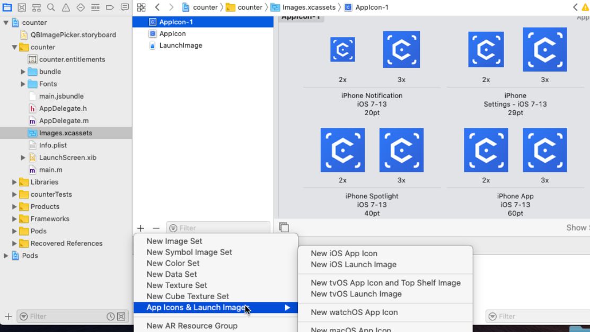

IOS-RN踩坑记录¶
各种RCT报错¶
一般是React并未被编译，在Libraries->add files to “”里将node_modules/react-native/react.xcodeproj添加进去，同时在build phases中将libreact.a手动添加进linking中。
然后 导航栏Product->schemes->edit schemes->build 中将react拖到你的项目之前，就会优先编译react。
轮播图滑动没反应¶
react-native-swiper死掉了，怀疑是react-native-progress版本问题，回退到3.6.0并没有解决问题。
换用react-native-page-swiper，解决。
AppIcon和LaunchImage¶
build phases中有个Copy bundle resources
添加静态资源，很烦，要准备各种尺寸的图片。
使用Python一键解决
from PIL import Image
import os
#w=[320,640,640,750,1242,2208,2436]
#h=[480,960,1136,1334,2208,1242,1125]
w=[16,40,58,60,80,87,120,180,216,256,512,1024]
h=[16,40,58,60,80,87,120,180,216,256,512,1024]
file='./ori_square.png'
for i in range(0,len(w)):
img = Image.open(file)
width=w[i]
height=h[i]
# resize
img = img.resize((width, height), Image.ANTIALIAS)
# mkdir+name
dirname="./ico_"+str(width)+"x"+str(height)
filename=str(width)+"x"+str(height)+".png"
os.mkdir(dirname)
img.save(dirname+"/"+filename)
print("success"+str(width)+"x"+str(height))
添加完后在General中设置即可
RN-js打包¶
在AppDelegate.m中
@implementation AppDelegate 下方 @end之前添加
-(NSURL *)sourceURLForBridge:(RCTBridge *)bridge { #if DEBUG return [[RCTBundleURLProvider sharedSettings] jsBundleURLForBundleRoot:@"index" fallbackResource:nil]; #else return [[NSBundle mainBundle] URLForResource:@"main" withExtension:@"jsbundle"]; #endif }
在root/ios 目录下新建bundle文件夹
在yarn的配置文件package.json中添加
"scripts": { "android": "react-native run-android", "ios": "react-native run-ios", "start": "react-native start", "test": "jest", "lint": "eslint .", #添加 bundle-ios 指令 "bundle-ios": "node node_modules/react-native/local-cli/cli.js bundle --entry-file index.js --platform ios --dev false --bundle-output ./ios/bundle/index.ios.jsbundle --assets-dest ./ios/bundle" },
根目录下运行 yarn bundle-ios,看到bundle文件夹下出现index.ios.jsbundle
然后在xcode中就可以正常Build了